Les éléments suivants ont été intentionnellement modifiés par rapport à la maquette originale et ne constituent pas des corrections à apporter mais les nouveaux éléments validés :
prevoyance-lpp-geneve) — cette page n'existait pas auparavant et doit être créée dans WordPress à créerToutes les pages de service doivent impérativement vivre sous le répertoire /services/. Le tableau ci-dessous liste l'URL correcte attendue vs. l'URL actuelle dans WordPress pour chacune des 7 pages.
phi-fiduciaire.ch/services/comptabilite-geneve/
dev.phi-fiduciaire.ch/comptabilite/
phi-fiduciaire.ch/services/fiscalite-tva-geneve/
dev.phi-fiduciaire.ch/fiscalite-tva/
phi-fiduciaire.ch/services/gestion-salaires-geneve/
dev.phi-fiduciaire.ch/gestion-des-salaires/
phi-fiduciaire.ch/services/creation-societe-geneve/
dev.phi-fiduciaire.ch/creation-de-societe/
phi-fiduciaire.ch/services/domiciliation-entreprise-geneve/
dev.phi-fiduciaire.ch/domiciliation-dentreprise/
phi-fiduciaire.ch/services/mandat-administrateur-geneve/
dev.phi-fiduciaire.ch/mandat-dadministrateur/
phi-fiduciaire.ch/services/prevoyance-lpp-geneve/
— page à créer
Cette correction est prioritaire avant toute mise en ligne — une mauvaise structure d'URL impacte directement le SEO, le maillage interne et les liens canoniques déjà configurés dans le code source des pages.
Le numéro s'affiche sans espaces : +41774303693
La maquette affiche : +41 77 430 36 93
Mettre à jour la valeur du champ téléphone dans WordPress. Le lien href peut conserver le format compact (tel:+41774303693), seul le texte affiché doit être formaté.
<a href="tel:+41774303693" class="nav__phone">+41 77 430 36 93</a>Le bouton a une bordure rectangulaire fine (style outline carré). Dans la maquette, c'est un bouton fond blanc, coins arrondis, texte foncé — identique à la homepage.
Appliquer le même style que le bouton CTA navbar de la homepage : fond blanc, border-radius arrondi, texte couleur teal foncé.
.nav__cta {
background: white;
color: #1C4A47;
border: 1px solid white;
border-radius: 100px;
padding: 10px 22px;
font-size: 11px;
font-weight: 600;
letter-spacing: 0.10em;
text-transform: uppercase;
}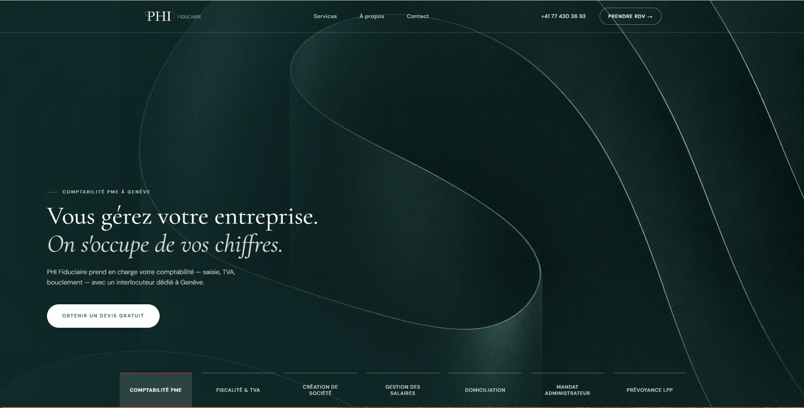
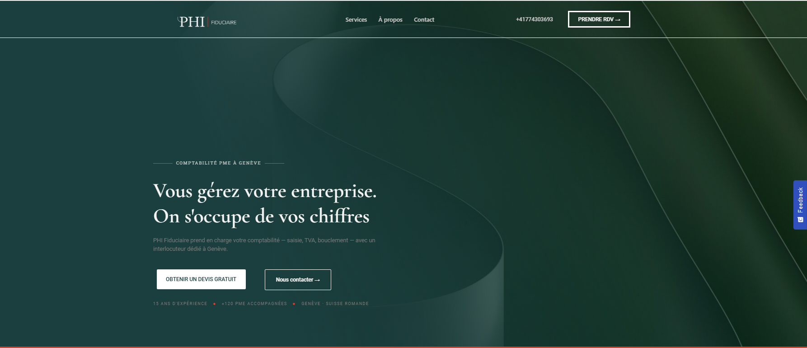
La version WordPress affiche un trait rouge des deux côtés du surtitle (ex. "— GESTION DES SALAIRES À GENÈVE —"), créant un effet encadré symétrique. La maquette n'a qu'un trait à gauche, court et fin, suivi du texte en capitales.
Supprimer le pseudo-élément ::after ou le span décoratif à droite du surtitle. Conserver uniquement le trait gauche. Vérifier aussi que le trait est plus court et plus fin que dans la version WP.
.hero__overline {
display: flex;
align-items: center;
gap: 14px;
}
.hero__overline-dash {
display: inline-block;
width: 24px; /* court */
height: 1px; /* fin */
background: #ef3a24;
flex-shrink: 0;
}
/* ⚠️ S'assurer qu'il n'y a PAS de ::after sur .hero__overline */
.hero__overline::after { display: none; }L'overlay de la version WordPress diffère de la maquette : la densité, la direction ou l'opacité du dégradé ne correspondent pas. Le texte risque d'être moins lisible ou la texture de l'image de fond trop masquée.
Appliquer un dégradé partant du bas-gauche vers la droite, suffisamment sombre pour garantir la lisibilité du texte blanc, mais laissant apparaître la texture et les courbes de l'image de fond.
⚠️ Une nouvelle version de l'image hero a été mise en place — vérifier le GitHub du projet avant d'ajuster l'overlay.
.hero__bg::after {
content: '';
position: absolute;
inset: 0;
background: linear-gradient(
120deg,
rgba(15, 38, 38, 0.72) 0%,
rgba(15, 38, 38, 0.35) 55%,
rgba(15, 38, 38, 0.10) 100%
);
z-index: 1;
}Les tabs de navigation entre services (visible en bas du hero dans la maquette : Comptabilité PME / Fiscalité & TVA / Création de société / etc.) sont absents de la version WordPress.
Intégrer le composant .service-tabs à positionner en bas de la section hero, ancré en position: absolute; bottom: 0. Se baser sur le code du GitHub du projet pour le style et l'implémentation exacte.
<nav class="service-tabs" aria-label="Nos services">
<a href="comptabilite-geneve" class="service-tabs__tab" aria-current="page">Comptabilité PME</a>
<a href="fiscalite-tva-geneve" class="service-tabs__tab">Fiscalité & TVA</a>
<a href="creation-societe-geneve" class="service-tabs__tab">Création de société</a>
<a href="gestion-salaires-geneve" class="service-tabs__tab">Gestion des salaires</a>
<a href="domiciliation-entreprise-geneve" class="service-tabs__tab">Domiciliation</a>
<a href="mandat-administrateur-geneve" class="service-tabs__tab">Mandat administrateur</a>
<a href="prevoyance-lpp-geneve" class="service-tabs__tab">Prévoyance LPP</a>
</nav>Dans la version WordPress, les deux lignes du H1 sont en romain droit (même style). Dans la maquette, la première ligne est en romain ("Vous gérez votre entreprise.") et la deuxième ligne est en italique serif ("On s'occupe de vos chiffres.") — ce contraste romain/italique est une signature visuelle forte du design, à reproduire sur toutes les pages service.
Envelopper la deuxième ligne dans une balise <em> et vérifier que la font-family appliquée est bien la Cormorant Garamond (et non DM Sans).
<h2 class="hero__title">
Vous gérez votre entreprise.<br>
<em>On s'occupe de vos chiffres.</em>
</h2>.hero__title em {
font-style: italic;
font-family: 'Cormorant Garamond', serif;
color: rgba(255, 255, 255, 0.82);
display: block;
}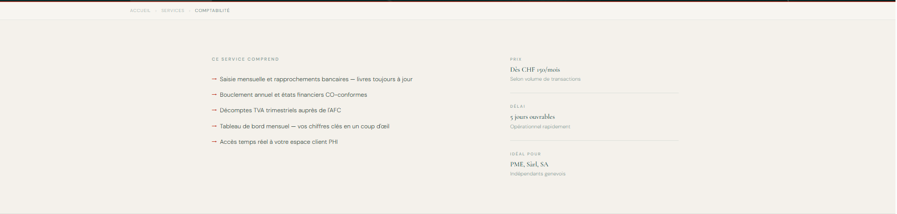
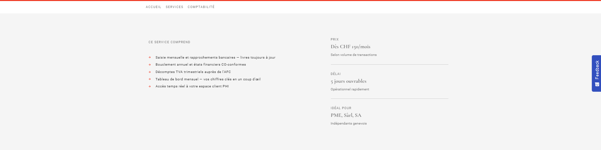
Aucun séparateur n'est visible entre les items dans la version WordPress : ACCUEIL SERVICES COMPTABILITÉ. La maquette affiche le chevron typographique fin › entre chaque item.
Remplacer le caractère > (qui rend >) par › dans chaque séparateur du fil d'Ariane, sur toutes les pages service.
<!-- Avant -->
<li class="breadcrumb-bar__sep" aria-hidden="true">></li>
<!-- Après -->
<li class="breadcrumb-bar__sep" aria-hidden="true">›</li>Le dernier item (page active, ex. "COMPTABILITÉ") ne se distingue pas visuellement des autres items. Dans la maquette il apparaît plus foncé / weight plus élevé.
.breadcrumb-bar__current {
color: rgba(28, 74, 71, 0.90); /* plus foncé */
font-weight: 600;
}La maquette affiche un fond crème chaud #F4F1EB pour toute la section. La version WordPress affiche un fond blanc/gris neutre, ce qui perd le ton éditorial de la charte graphique.
S'assurer que la règle CSS s'applique sans être écrasée par le thème global Elementor. Si nécessaire, augmenter la spécificité.
.service-summary {
background-color: #F4F1EB !important; /* override thème si nécessaire */
}Dans la maquette, chaque item est bien aéré. La version WordPress les affiche plus serrés — les items se suivent presque sans respiration. Cause probable : styles par défaut WordPress sur les <ul> et <li> qui entrent en conflit.
.service-summary__list {
list-style: none;
padding: 0;
margin: 0;
display: flex;
flex-direction: column;
gap: 20px;
}
.service-summary__list li {
margin: 0; /* neutraliser héritage thème */
padding-left: 20px;
}La maquette montre un padding top/bottom généreux — le label "CE SERVICE COMPREND" a de la respiration au-dessus. La version WordPress démarre le contenu de manière abrupte. Cause probable : la variable CSS --space-xl n'est pas définie dans l'environnement WordPress.
Remplacer la variable par une valeur fixe. Si les variables CSS sont bien importées, vérifier que --space-xl est défini dans :root du shared.css chargé avant service.css.
.service-summary__inner {
padding: 72px 80px; /* valeur fixe, remplace var(--space-xl) */
}
/* Mobile */
@media (max-width: 768px) {
.service-summary__inner {
padding: 48px 24px;
}
}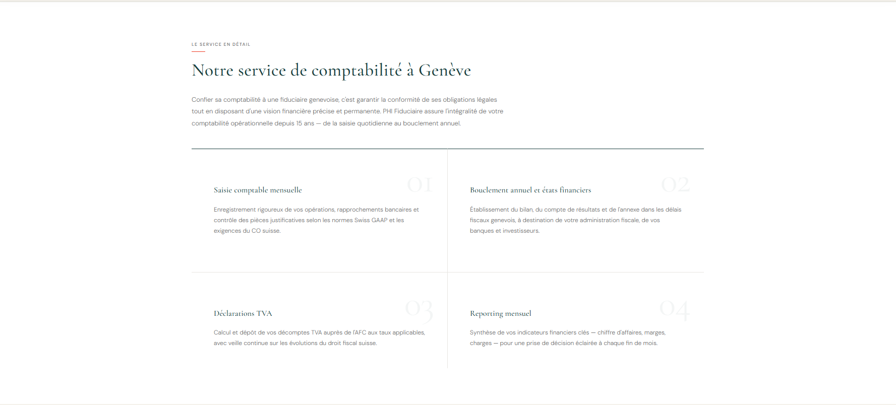
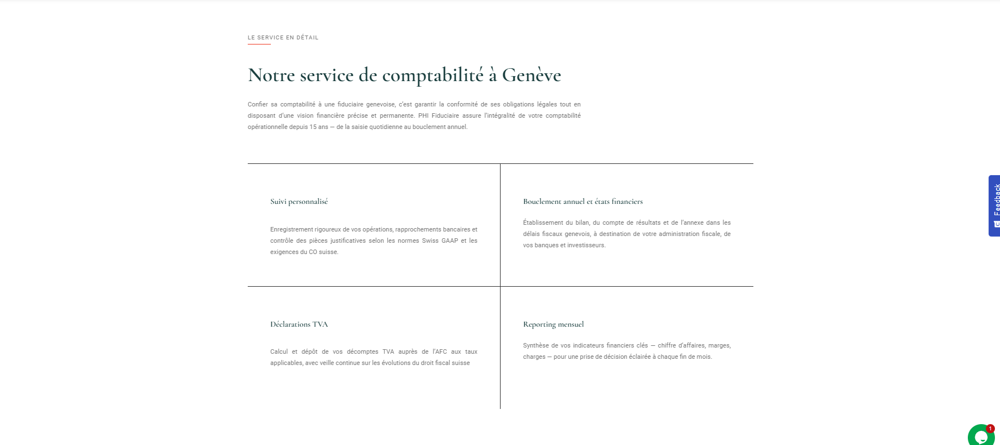
Dans la maquette, chaque carte affiche un grand numéro en filigrane (01, 02, 03, 04) en haut à droite de la cellule — très grande taille, opacité 5%, police display. Ces numéros sont complètement absents de la version WordPress.
Vérifier que chaque carte contient bien le <span class="component-card__number"> et que le CSS correspondant est appliqué. Si Elementor retire les spans décoratifs, les recréer via le champ HTML personnalisé de chaque carte.
<div class="component-card">
<span class="component-card__number" aria-hidden="true">01</span>
<h3>Saisie comptable mensuelle</h3>
<p>...</p>
</div>.component-card__number {
font-family: 'Cormorant Garamond', serif;
font-size: 88px;
font-weight: 400;
color: rgba(27, 63, 63, 0.05);
position: absolute;
top: 16px;
right: 24px;
line-height: 1;
pointer-events: none;
user-select: none;
}
/* ⚠️ Le parent .component-card doit avoir position: relative */
.component-card { position: relative; }Dans la version WordPress, les lignes qui séparent les 4 cartes de la grille sont visiblement plus épaisses que dans la maquette. La maquette utilise des traits de 1px, très discrets. WordPress applique probablement une valeur de bordure plus épaisse via le thème, ou la variable --color-border n'est pas résolue et un fallback s'applique.
Forcer explicitement les bordures à 1px sur les cartes :
.component-card {
border-top: 1px solid #1C4A47; /* --color-primary */
border-right: 1px solid rgba(28, 74, 71, 0.12); /* --color-border */
}
.component-card:nth-child(2n) { border-right: none; }
.component-card:nth-child(n+3) { border-top-color: rgba(28, 74, 71, 0.12); }Dans la version WordPress, le paragraphe d'introduction est en justify (espacement inégal entre les mots, rendu typographique dégradé). La maquette utilise l'alignement à gauche, plus lisible et conforme à la charte.
Forcer l'alignement gauche sur le paragraphe intro, en neutralisant le text-align: justify que le thème WordPress applique souvent globalement.
.description__intro {
text-align: left !important;
max-width: 780px;
font-size: 16px;
font-weight: 300;
line-height: 1.85;
}La section démarre de manière plus abrupte dans WordPress. Même cause que la section précédente : la variable --space-xl non résolue.
.description {
padding: 72px 0; /* valeur fixe, remplace var(--space-xl) */
}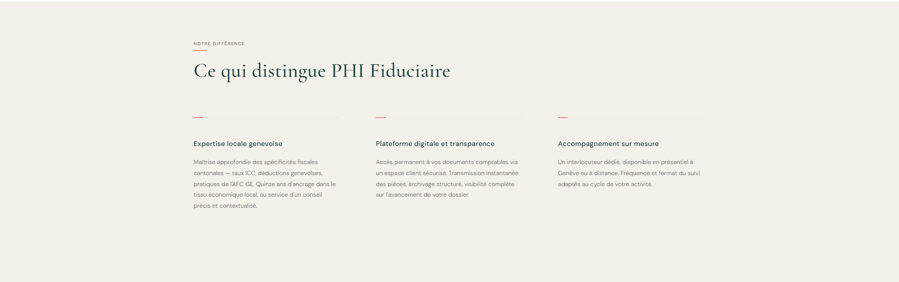
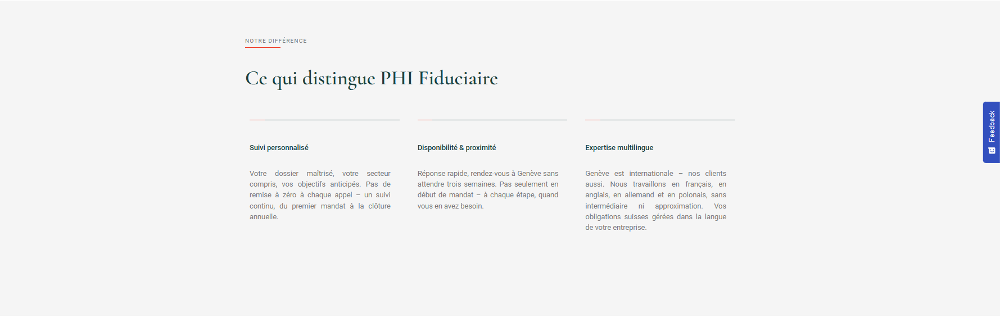
Même problème que les sections précédentes — le fond WordPress est blanc/gris neutre au lieu du crème chaud #F4F1EB.
.pourquoi {
background-color: #F4F1EB !important;
}WordPress affiche une ligne bicolore au-dessus de chaque bloc (segment rouge à gauche + segment teal foncé à droite). La maquette montre un court trait rouge suivi d'une ligne grise fine pleine largeur.
.pourquoi-bloc {
border-top: 1px solid rgba(28, 74, 71, 0.15);
padding-top: 32px;
}
/* Trait rouge court au-dessus de la ligne grise */
.pourquoi-bloc::before {
content: '';
display: block;
width: 24px;
height: 1px;
background: #ef3a24;
margin-bottom: 24px;
}Les titres des 3 blocs sont affichés en bold dans WordPress. La maquette les montre en weight moyen/léger, en police serif — plus élégant et cohérent avec la charte.
.pourquoi-bloc h3 {
font-family: 'Cormorant Garamond', serif;
font-weight: 500;
font-size: 20px;
color: #1C4A47;
}Même problème récurrent — le thème WordPress force text-align: justify sur les paragraphes.
.pourquoi-bloc p {
text-align: left !important;
}Les titres et textes des 3 blocs ne correspondent pas à la maquette de référence — se référer au GitHub du projet pour le contenu exact.
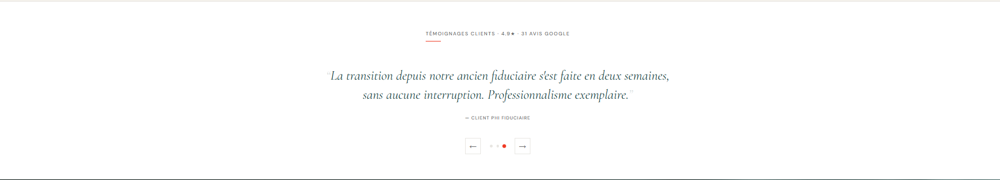
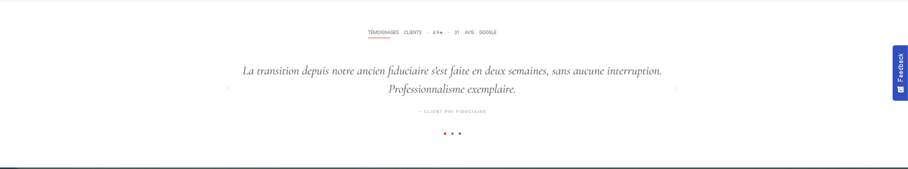
Le texte du témoignage est affiché en taille standard (~22px) dans WordPress. La maquette l'affiche en grand format éditorial (~34px), ce qui donne tout son impact visuel à la section.
.testimonial-slide__text {
font-family: 'Cormorant Garamond', serif;
font-size: 34px;
font-style: italic;
font-weight: 400;
line-height: 1.45;
}La maquette affiche la citation en teal foncé #1C4A47. WordPress utilise un gris/anthracite neutre qui perd la cohérence chromatique de la charte.
.testimonial-slide__text {
color: #1C4A47;
}WordPress affiche de simples chevrons flottants (‹ ›) sans style. La maquette montre des flèches dans des carrés avec une bordure fine (← →).
.testimonials__prev,
.testimonials__next {
display: flex;
align-items: center;
justify-content: center;
width: 36px;
height: 36px;
border: 1px solid rgba(28, 74, 71, 0.30);
background: transparent;
color: #1C4A47;
cursor: pointer;
font-size: 14px;
transition: all 0.2s ease;
}
.testimonials__prev:hover,
.testimonials__next:hover {
background: #1C4A47;
color: white;
border-color: #1C4A47;
}Dans WordPress la citation s'étale sur toute la largeur. La maquette la contient dans ~640px, centré, ce qui crée un bloc de texte dense et élégant.
.testimonial-slide {
max-width: 640px;
margin: 0 auto;
text-align: center;
}La section est trop resserrée dans WordPress. La maquette a une respiration généreuse au-dessus et en dessous.
.testimonials {
padding: 80px 0;
}Le tracking du label "TÉMOIGNAGES CLIENTS · 4.9★ · 31 AVIS GOOGLE" est différent de la maquette — les mots semblent plus espacés dans WordPress.
.testimonials__header .label {
letter-spacing: 0.15em;
word-spacing: normal;
}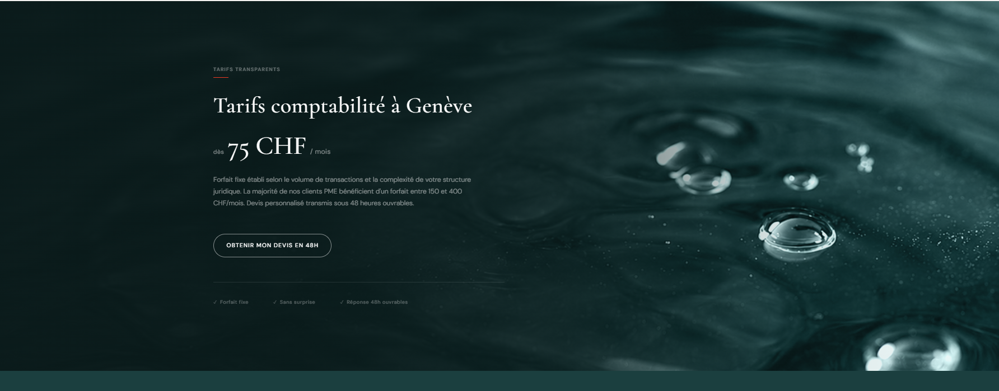
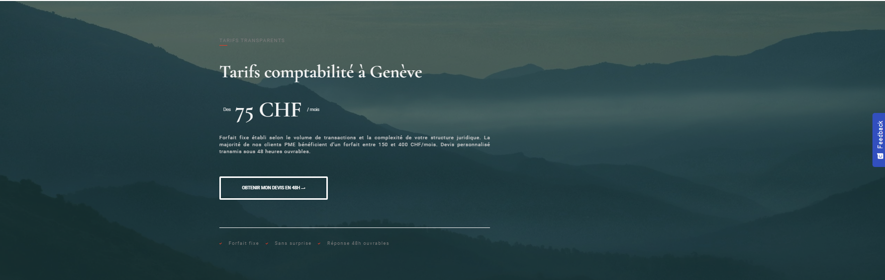
La section est beaucoup trop courte dans WordPress (~380px). La maquette montre une section immersive et généreuse (~550px minimum) qui donne de la valeur au contenu tarif.
.pricing-teaser {
min-height: 550px;
display: flex;
align-items: center;
}L'overlay de la version WordPress ne correspond pas à la maquette — le dégradé est trop clair ou mal orienté, ce qui compromet la lisibilité du texte blanc sur le fond sombre.
.pricing-teaser__bg::after {
content: '';
position: absolute;
inset: 0;
background: linear-gradient(
120deg,
rgba(10, 30, 30, 0.80) 0%,
rgba(10, 30, 30, 0.45) 60%,
rgba(10, 30, 30, 0.20) 100%
);
z-index: 1;
}Le label est présent dans le HTML mais s'affiche en gris neutre, illisible sur le fond sombre de la section. Il doit être blanc avec suffisamment d'opacité pour être visible.
.pricing-teaser .label {
color: rgba(255, 255, 255, 0.55);
}
.pricing-teaser .label::after {
background: #ef3a24;
}Même problème récurrent — le thème WordPress force text-align: justify sur les paragraphes.
.pricing-teaser p {
text-align: left !important;
}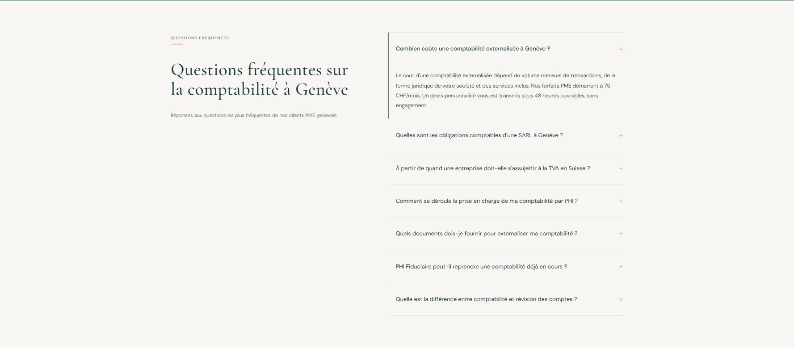
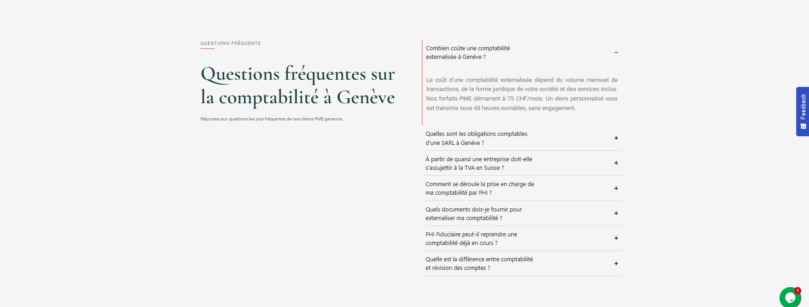
Même problème récurrent — fond blanc/gris neutre au lieu du crème chaud #F4F1EB.
.faq {
background-color: #F4F1EB !important;
}WordPress affiche "QUESTIONS FRÉQUENTE" — le S final est manquant.
<span class="label">Questions fréquentes</span>Dans WordPress la colonne droite (accordion FAQ) est trop étroite — les questions wrappent sur 2 lignes. Dans la maquette chaque question tient sur une seule ligne, ce qui donne une lecture plus fluide.
Vérifier la grille 2 colonnes de la section FAQ. La colonne droite doit être suffisamment large (~62% de la largeur totale).
.faq__inner {
display: grid;
grid-template-columns: 38fr 62fr;
gap: 80px;
align-items: start;
}Le texte des réponses ouvertes est en text-align: justify dans WordPress. Même problème récurrent imposé par le thème.
.faq-item__answer {
text-align: left !important;
}Les items fermés sont plus serrés dans WordPress. La maquette a une respiration plus généreuse entre chaque question.
.faq-item {
padding: 20px 0;
border-bottom: 1px solid rgba(28, 74, 71, 0.12);
}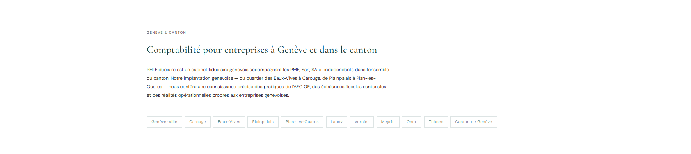
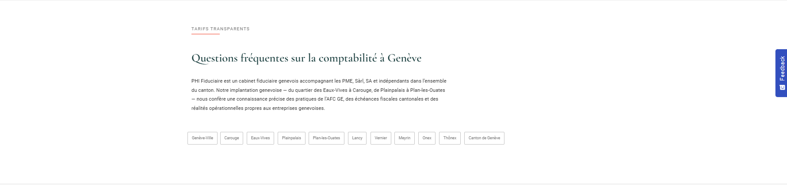
WordPress affiche "TARIFS TRANSPARENTS" comme label de cette section. Le label correct est "GENÈVE & CANTON". Le dev a copié le mauvais template de section.
<span class="label">Genève & Canton</span>WordPress affiche "Questions fréquentes sur la comptabilité à Genève" au lieu de "Comptabilité pour entreprises à Genève et dans le canton". Même cause — copier-coller de la mauvaise section.
<h2>Comptabilité pour entreprises à Genève et dans le canton</h2>Dans la maquette, plusieurs mots-clés du paragraphe sont des liens internes colorés en teal : PME, Sàrl, SA, indépendants, Plainpalais, Plan-les-Ouates, l'AFC GE. Dans WordPress tout le texte est de la même couleur neutre — les liens sont absents ou non stylisés.
Vérifier que les liens internes sont bien présents dans le HTML et que le style suivant est appliqué :
.local-seo p a {
color: #1C4A47;
text-decoration: underline;
text-decoration-color: rgba(28, 74, 71, 0.30);
text-underline-offset: 3px;
}
.local-seo p a:hover {
text-decoration-color: #1C4A47;
}Dans la maquette le H2 et le paragraphe sont contenus dans ~60% de la largeur, laissant de l'espace à droite. Dans WordPress le texte s'étend sur toute la largeur disponible.
.local-seo__content {
max-width: 620px;
}Même problème récurrent — section plus compressée dans WordPress que dans la maquette.
.local-seo {
padding: 72px 0;
}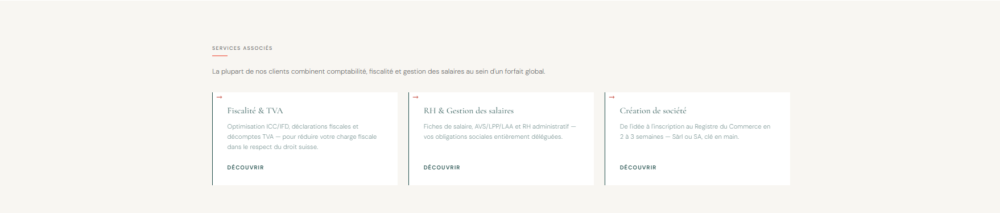
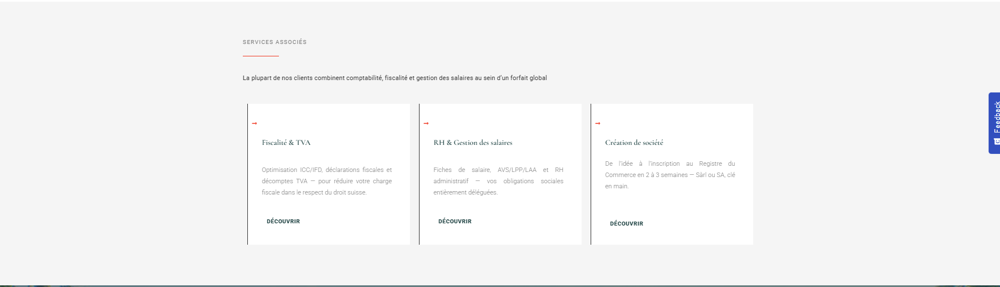
La section "Services Associés" affiche un fond blanc/gris neutre dans WordPress. La maquette utilise le fond crème #F4F1EB — même problème que dans la section "Service en détail".
.related-services {
background-color: #F4F1EB !important;
}Le texte descriptif dans les 3 cartes est en text-align: justify dans WordPress. Problème récurrent imposé par le thème, visible notamment dans "RH & Gestion des salaires" et "Création de société".
.related-services .component-card p {
text-align: left !important;
}Même problème récurrent — section plus compressée dans WordPress que dans la maquette.
.related-services {
padding: 72px 0;
}Dans la maquette, un overlay teal foncé très opaque recouvre l'image de fond, rendant la section quasi noire-teal et assurant un fort contraste avec le texte blanc. Dans WordPress l'overlay est trop transparent — l'image de fond reste lumineuse et le rendu visuel perd en élégance et en lisibilité.
.final-cta {
position: relative;
}
.final-cta::before {
content: "";
position: absolute;
inset: 0;
background: rgba(28, 74, 71, 0.82);
z-index: 1;
}
.final-cta__inner {
position: relative;
z-index: 2;
}Problème récurrent — le paragraphe sous le H2 est probablement en text-align: justify imposé par le thème.
.final-cta p {
text-align: center !important;
}